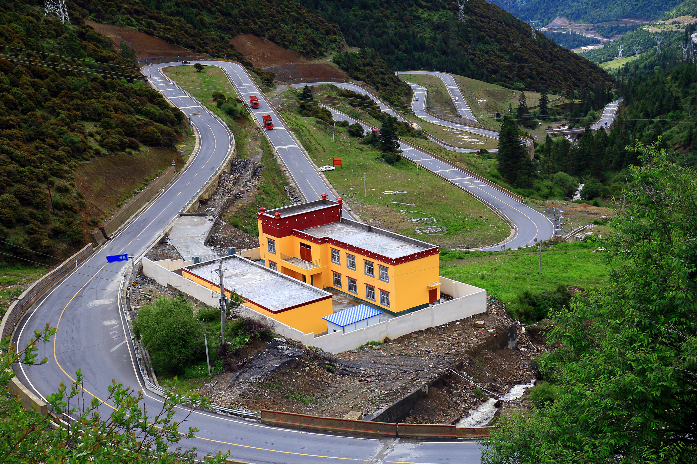
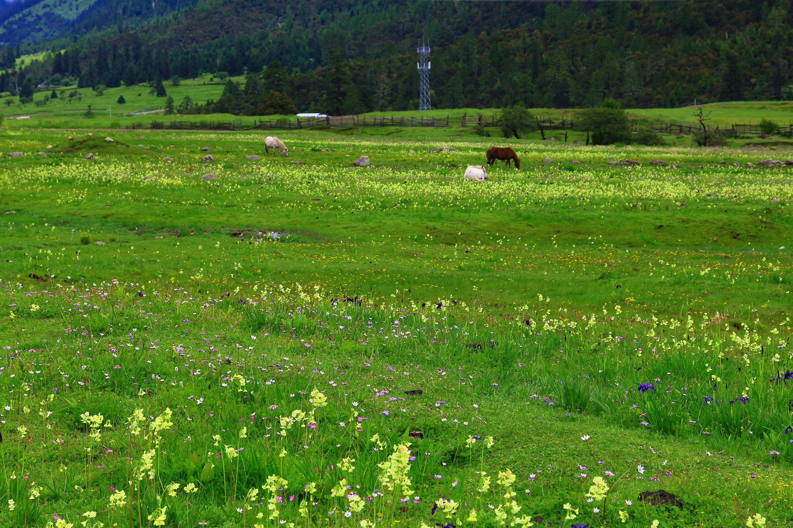
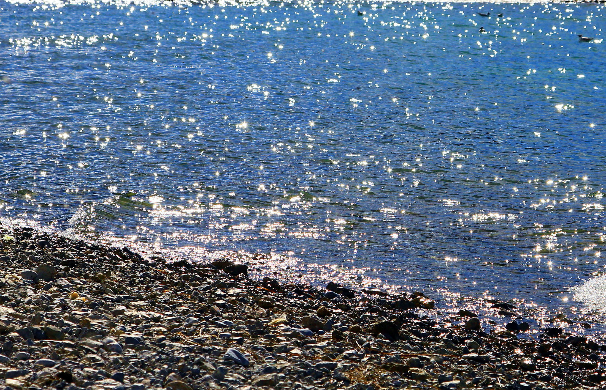
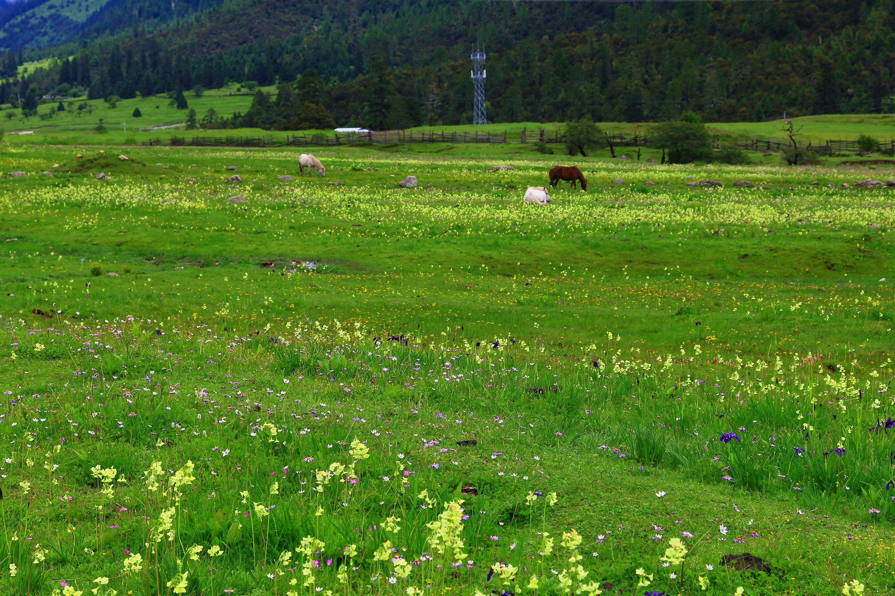
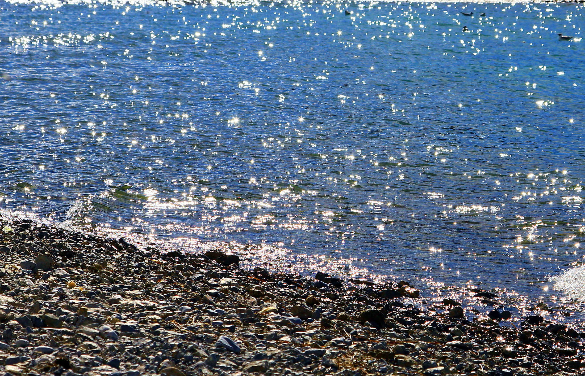
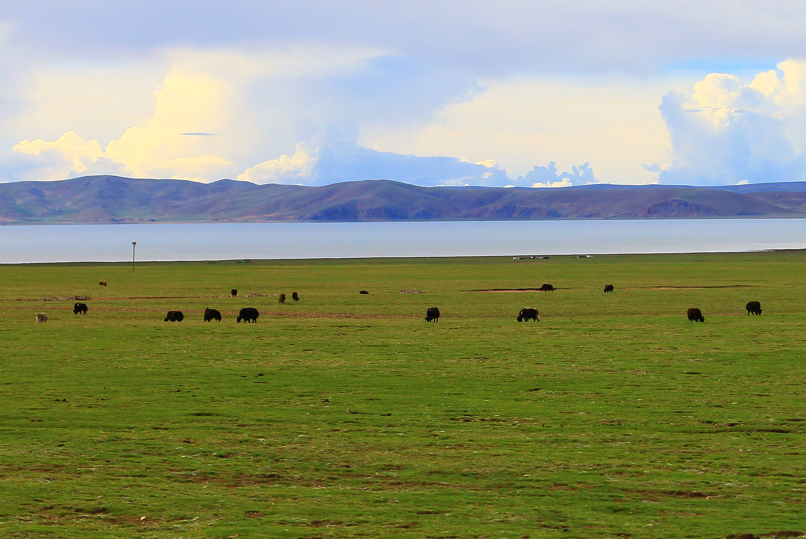
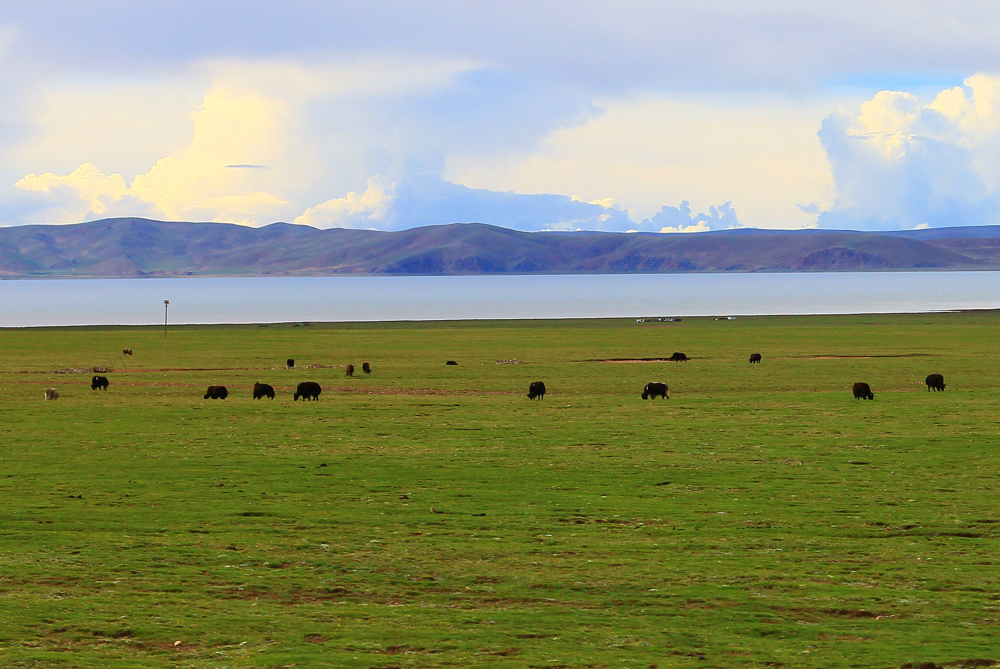

8月入藏
发信人: MF1335026 (PPlive), 信区: Photography. 发信站: 南京大学小百合站 (Wed Aug 17 21:52:09 2016)
2016年的夏天，去了西藏，可惜碰上了早到的雨季，错过了许多的风景......
1.泸定桥
2.此行的车队
3.海螺沟冰川
4.折多山垭口
5.海子山
6.海子山姊妹湖，十分期待的地方，又被雨雾所挡
7.剪子弯山

8.去稻城的路上
卡子拉山垭口
 9.稻城
10.去亚丁的路上
波瓦山
兔儿山
9.稻城
10.去亚丁的路上
波瓦山
兔儿山
 11.亚丁
牛奶海
夏诺多吉
仙乃日
12.毛垭大草原
13.狼毒花
14.玛尼堆
15.然乌湖出水口，上帝的眼泪，又被云雾挡住。。。。。。
11.亚丁
牛奶海
夏诺多吉
仙乃日
12.毛垭大草原
13.狼毒花
14.玛尼堆
15.然乌湖出水口，上帝的眼泪，又被云雾挡住。。。。。。
 16.鲁朗

17.米堆冰川
18.红土青稞
19.邦达草原
20.安久拉山
21.怒江大峡谷
22.业拉山
23.72拐
24.东达山，垭口海拔5008米
25.波密
26.色季拉山，再次大雾弥漫，没有看到传说中的中国最美雪山――南迦巴瓦峰
27.米拉山，行程中翻越的最高垭口，5013米
28.朝圣者，骑行者
29.通麦三桥，再无天险
30.纳木错，据说这里的星空很美，不知谁有如此缘分

16.鲁朗

17.米堆冰川
18.红土青稞
19.邦达草原
20.安久拉山
21.怒江大峡谷
22.业拉山
23.72拐
24.东达山，垭口海拔5008米
25.波密
26.色季拉山，再次大雾弥漫，没有看到传说中的中国最美雪山――南迦巴瓦峰
27.米拉山，行程中翻越的最高垭口，5013米
28.朝圣者，骑行者
29.通麦三桥，再无天险
30.纳木错，据说这里的星空很美，不知谁有如此缘分

 31.草原，雪山

32.布达拉宫
33.大昭寺
34.青藏公路
35.俯瞰大地
31.草原，雪山

32.布达拉宫
33.大昭寺
34.青藏公路
35.俯瞰大地